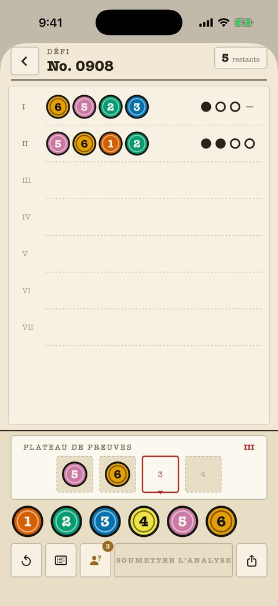

Affaires classiques
240 affaires du débutant au maître, chacune une feuille numérotée du dossier. Le compteur d’essais est en haut à droite ; les marques sont de l’encre pure — point, anneau, tiret — et ne dépendent jamais de la couleur.
- Chaque analyse passée reste sur la feuille pour recouper.
- Les notes sur le plateau marquent les couleurs éliminées et confirmées.
- Le réglage « Marques de forme » donne à chaque couleur sa propre silhouette.
- Les 40 premières affaires sont gratuites.